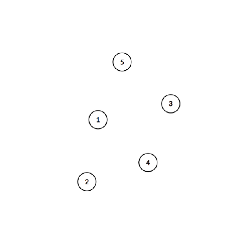
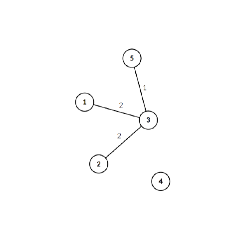
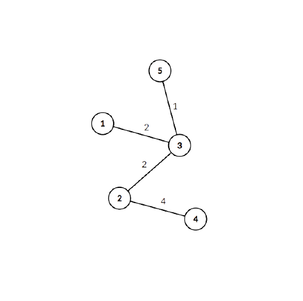

Задача : Имаме свързан претеглен неорентиран граф с $n$ върха и $m$ ребра. Искаме да останат $n-1$ ребра (графът да стане дърво) като искаме сбора на останалите ребра (участващите в дървото) да е минимален.
За задачата ще използваме точно гореспоменатото минимално покриващо дърво. Нека първо споменем някои свойства на MST:В началото на алгоритъма всички ребра ще са отделени в нарастващ ред и ще имаме само върховете, отделени в свои дървета :
Сега спокойно ще добавим ребрата с тежест 1 и 2, но стигайки до теброто междъ 1 и 5 с тегло 3 ние ще видим, че двата върха с в едно и също дърво и няма да сложим реброто.
Аналогично ще продължим свързването докато получим резултата –
Има различни имплементации, но тук ще разгледаме една, която използва DSU (Disjoint set union) като сложността ѝ е $O(M log N)$
Имплементация :
vector level(MAX_N),par(MAX_N); /// level - ниво на всяко дърво
///( "балансирайки дърветата" се получава по-добра сложност при връщане на първия родител)
/// par - директния родител на върха
int n,m;
struct Edge
{
int u,v,w;
Edge(){}
Edge(int _u, int _v, int _w)
{
u = _u; v = _v; w = _w;
}
};
vector adj[MAX_N]; /// запазваме графа
vector edges; /// ребрата
vector used_list; /// използвани в минималното дърво
bool comparator(Edge e1, Edge e2) /// за сортиране
{
return e1.w < e2.w;
}
void make_set(int v) /// отделя всеки връх като самостоятелно дърво
{
par[v] = v;
level[v] = 0;
}
int find_set(int v) /// намира първия родител
{
if(v == par[v]) return v;
par[v] = find_set(par[v]);
return par[v];
}
void union_sets(int a, int b) /// обединява две дървета
{
a = find_set(a);
b = find_set(b);
if(a != b)
{
if(level[a] < level[b]) swap(a,b);
par[b] = a;
if(level[a] == level[b])
level[a]++;
}
}
sort(edges.begin(),edges.end(),comparator);
int sum_of_used_edges = 0;
for(int i=0; i<=n; i++) make_set(i);
for(auto x: edges)
{
if(find_set(x.v) != find_set(x.u))
{
sum_of_used_edges += x.w;
used_list.push_back(x);
union_sets(x.v, x.u);
}
}
Задачи и ресурси:
Може да намерите още лекции по темата на следния линк.
Codechef - Fullmetal Alchemist
UVA 12176 - Bring Your Own Horse
UVA 10600 - ACM Contest and Blackout
Hackerrank - Roads in HackerLand
Codechef - Chefland and Electricity
UVA 10307 - Killing Aliens in Borg Maze
Codeforces - Hongcow Builds a Nation
UVA - 908 - Re-connecting Computer Sites
UVA 1235 - Anti Brute Force Lock